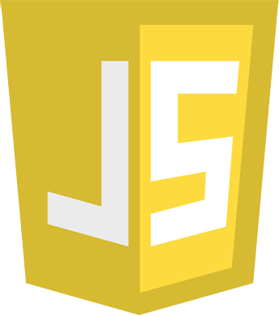

Linguagens de programação
Introdução
Existem diversas linguagens de programação, cada uma com características e aplicações diferentes. Algumas são utilizadas principalmente no desenvolvimento web, enquanto outras possuem grande presença em sistemas, aplicações, jogos, dados e outras áreas.
Algumas linguagens
Python
Python é uma linguagem conhecida por possuir uma sintaxe relativamente simples e legível. É utilizada em áreas como desenvolvimento web, automação, análise de dados, inteligência artificial e desenvolvimento de scripts.

C
C é uma linguagem de programação criada na década de 1970 e possui grande importância na área de computação. É utilizada em sistemas operacionais, softwares de baixo nível, sistemas embarcados e outras aplicações que exigem maior controle sobre os recursos do computador.
Java
Java é uma linguagem orientada a objetos utilizada no desenvolvimento de diferentes tipos de aplicações. Possui presença em sistemas empresariais, aplicações para dispositivos e diversos projetos de software.

JavaScript
JavaScript é uma das principais linguagens utilizadas no desenvolvimento web. No navegador, permite adicionar comportamentos e interatividade às páginas, podendo também ser utilizada no desenvolvimento do lado do servidor.

Linguagens e suas áreas respectivas de uso
| Linguagem | Área | Frequência de uso |
|---|---|---|
| Python | Ciência de Dados, Inteligência Artificial | 39% - 42% |
| Java | back-end | 39% |
| C++ | Desenvolvimento de Jogos (AAA) | 80% a 90% |